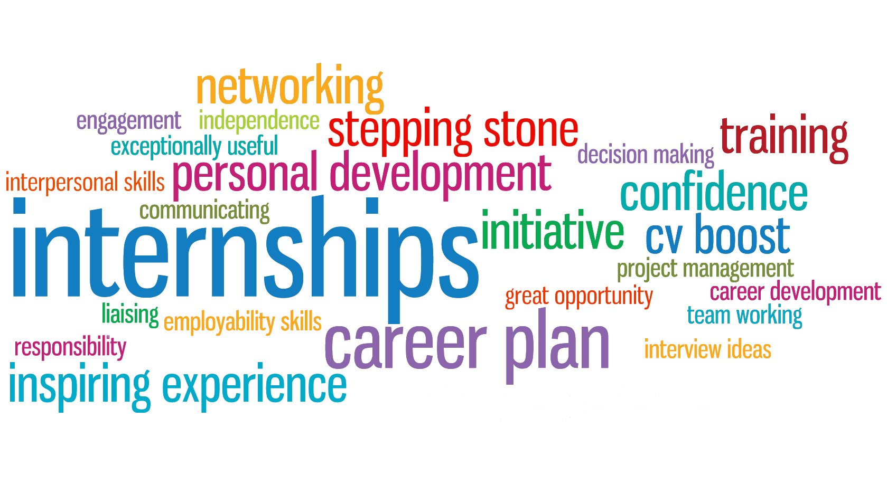

Year Up consists of two main phases: Learning and Development phase and Internship phase. In the L&D phase students go through the training learning the tech, communication, and professional skills they need to be successful at internship. It is usually 6 months of training and divided into the Mods, or Modules. 
During the Internship phase, all students are matched with a mentor and it is up to you to build that relationship with them and try to get as much help as you can to be successful at internship. Your internship will take up another 6 months and after that students graduate. During the Internship phase, students get the chance to work with one of Year Up’s corporate partners. The more students put in the effort and work at internship, the more they will get out of this experience. It is the time where students get to prove what Year Up has taught them while also developing new skills.